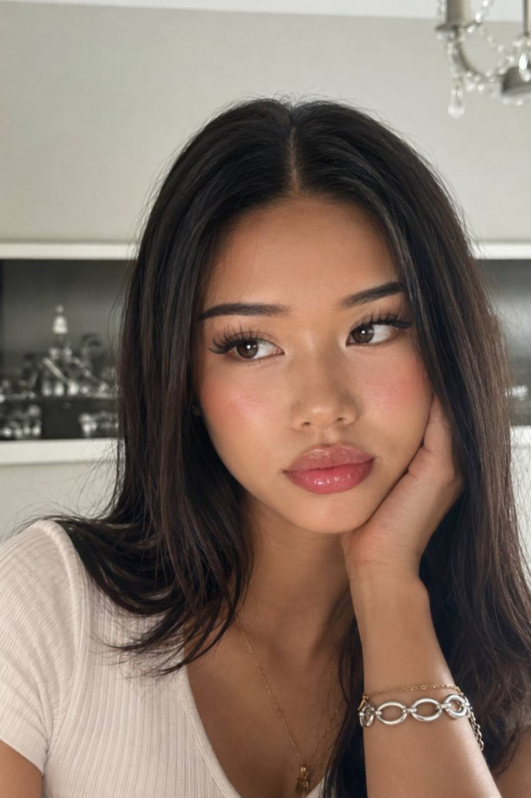

Lollylei

Hi, my name is Lollylei. I’m 23, a trans woman with a deep love for fashion, beauty and self-expression. For me, every look is a new mood — bold, playful and always evolving.
Step into Lollylei’s violet world
Come closer. Let’s talk about style, dreams and everything that makes us feel beautifully alive. There is always another side of me waiting to be discovered.
Every message is read personally